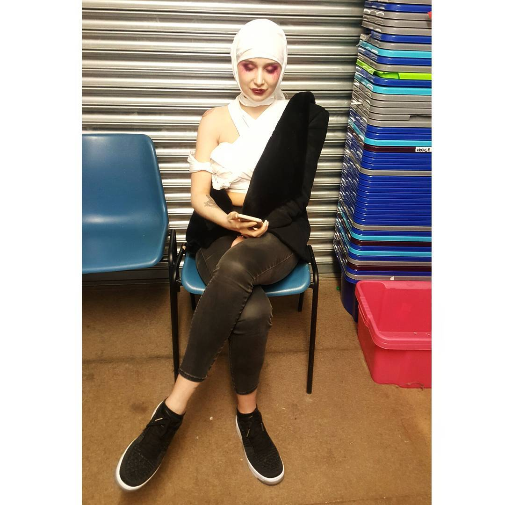
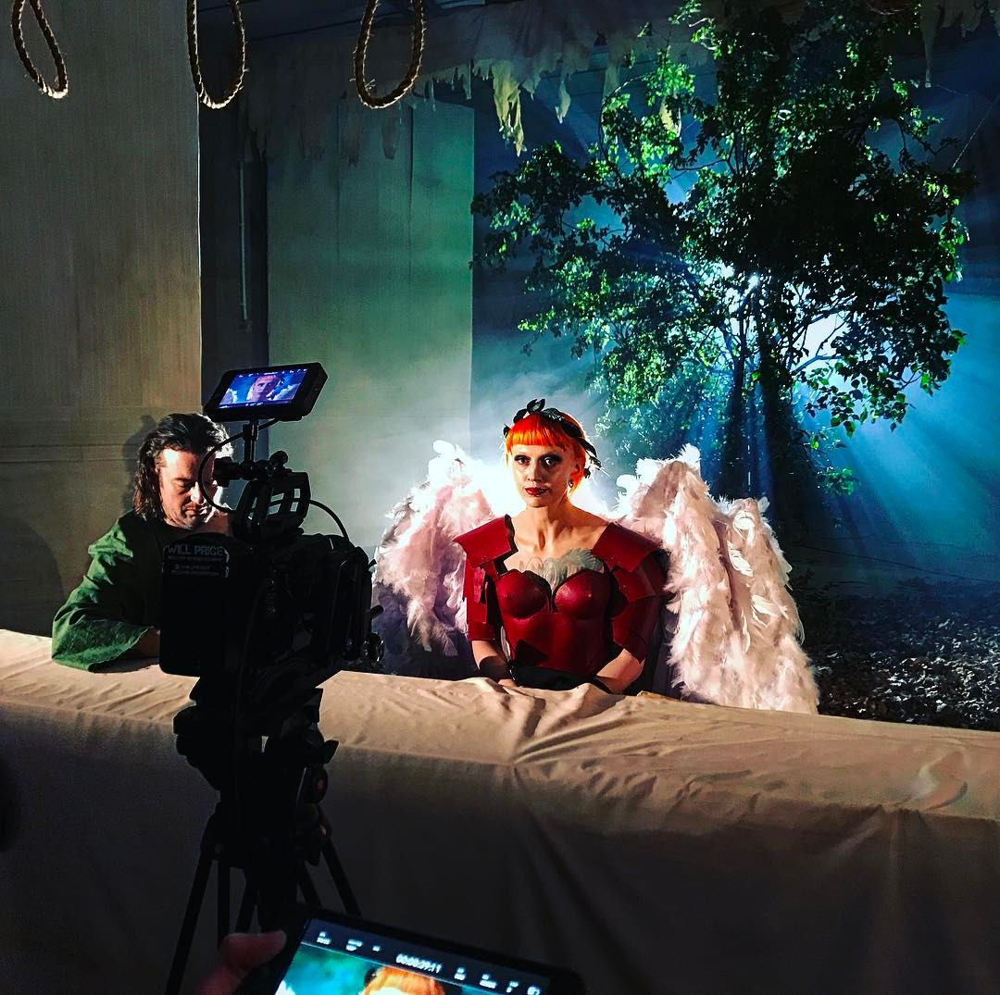
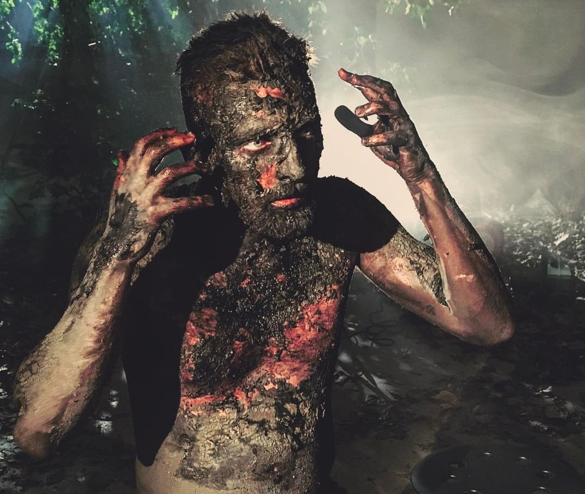
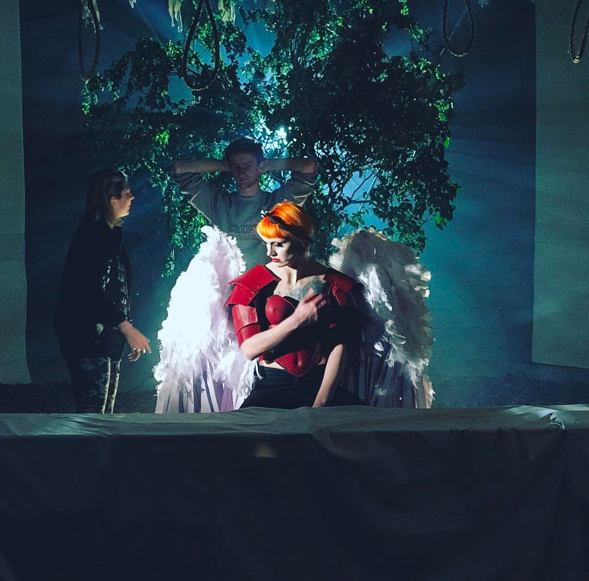
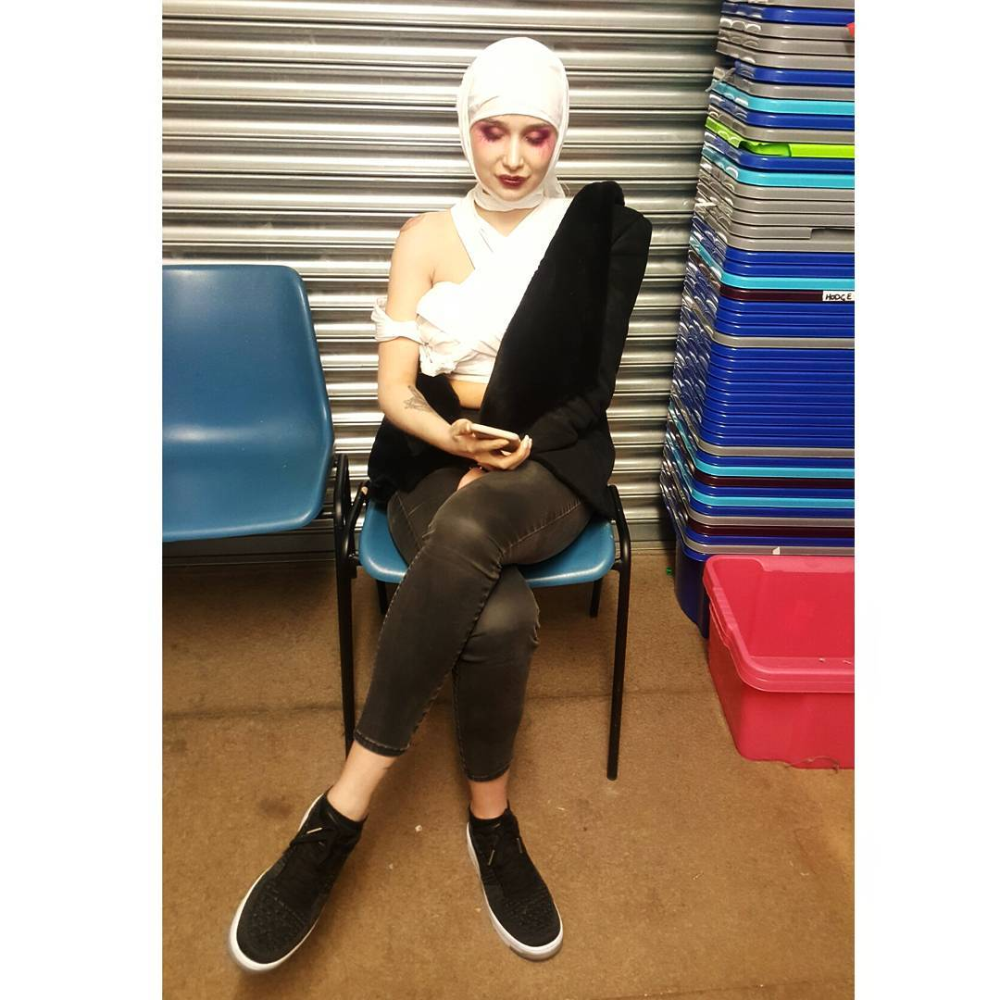
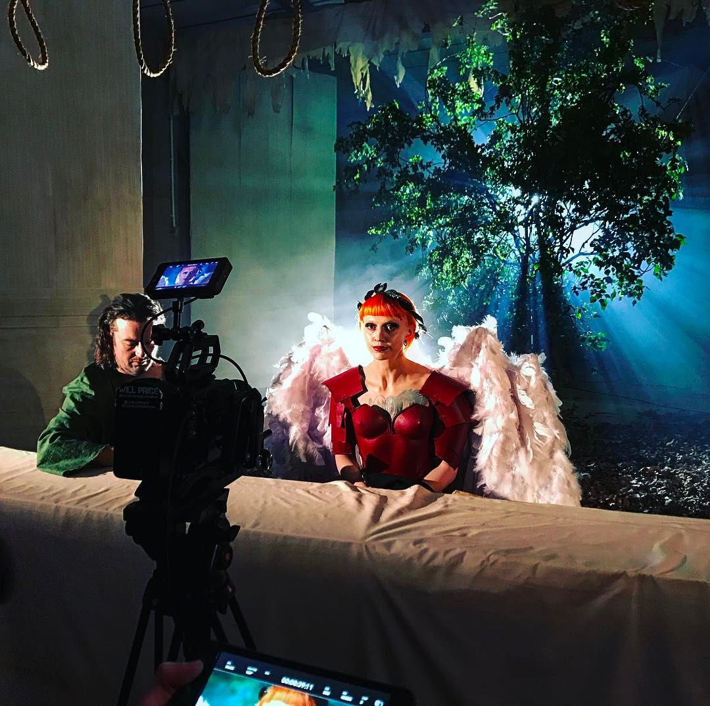
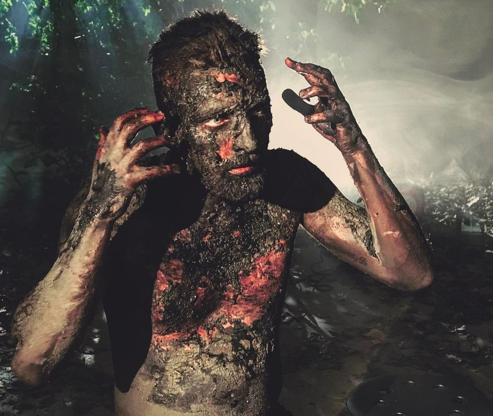
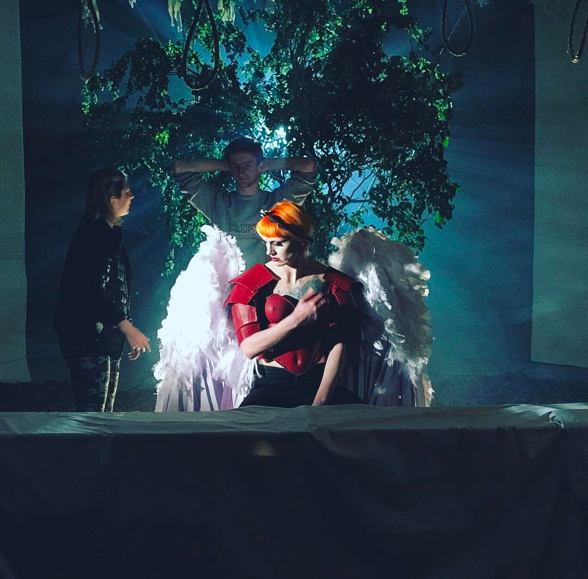

Mishkin Fitzgerald - Seraphim
Behind the video:
This video was a pretty big one from a design perspective, but it had quite small beginnings. The musician initially suggested a much simpler video where she was sitting at a table and figures would come and go to show the main theme of the song: emotional isolation. We wanted to try and be creative with this idea, so it became a much bigger beast than we ever anticipated.
My mind first went to the last supper as a broad concept for the film, mainly because it ticked the musician's boxes, AND it opened us up to some interesting symbolism. I was a bit iffy on the idea because of similar concepts, like the excellent Diane Young video, but our director was happy to move on so the brainstorming continued! But how did it become so weird, I hear you ask? You can thank The Divine Comedy for that! The musician mentioned that she enjoys bringing in religious imagery to her music, and the band as a whole is quite gothic; that, combined with the fact that The Last Supper is already being twisted to represent loss, made bringing in demon's and sins both a creatively interesting choice AND the chance to show a real visual story, with every piece of the puzzle bieng symbolic and relevant.
So it has a meaning then?
You bet it does!
I've been skirting around it before this, but the song is inherently about loss, and trying to remain emotionally strong when a close friend is experiencing dark thoughts. This scene is a physical representation of guilt and inner pain at these feelings, placed in the lense of a religious upbringing. He sees himself as a sinner, and so each creature at this table represents a punishment from a circle of hell found in The Divine Comedy... Except for one. The angel at the centre of the table. He sees this friend as a divine figure, an archangel in bible terms, who can save him from his guilt, his pain, but the sad reality is that she is struggling just as much as him, even if he can't see it.
What did you do on this one?
There was the usual producing, location and prop sourcing, communicating, planning, and other misc. jobs that were normal by this point, but, because this was such a design heavy job, I was primarily building and designing some pretty unusual things. I'll post some of these below, to give an impression:
Full size angel wings - This was the big job for this video (and that's saying something). I had to design and build two sets of full size angel wings that also move as reaslistically as possible. I'll do a full write-up of these soon as an article post, but this meant a lot of research into bird biology (naturally), materials, mechanics, and, of course, the actual building, testing, and mounting of them onto a backbrace. As far as I know, no-one else on the internet has made a double set before... The double set was because Seraphim (guardian angels-ish) in the bible have six wings, by the way; Mishkin has two wings tattooed on her chest, and, in the video, she has two on her back too. Symbolism!
A five meter long, sturdy table - A table, how hard can that be?! It turns out that when you push your table size up to five meters long and build it on a strict budget so that you have funds elsewhere, it is surprisingly difficult! All in all though, the actualy building and supporting of it was straightforward, but... It's certainly not pretty. Underneath the tablecloth, you have a Frankenstein of wood, screws, and sweat holding it together. Why not forego the support, you might ask? Because we have a symbolic representation of anger slamming his hands on it for about 45 minutes of filming... Naturally, this was a necessary part of the last supper scene, and had to be made to specific dimensions that we couldn't find regualar tables in. We did it for cheaper anyway!
A wide, 4 meter tree in the middle of a warehouse - Also quite an odd one to build! There was a lot of talk about how to source our tree before the shoot (a story that I won't get into now for so many reasons), but we always had a good idea of what the tree had to look like. It had to be wide, bushy, tall enough to reach the ceiling, and the leaves had to look a certain way; all of these make for a difficult tree creating excercise. In the end, we found several trees on the day of the set build, miraculously got them into the warehouse, and suspended them from the ceiling into a very nice standing position using some thick hrmp rope we had left over. It was a little fragile, but it certainly worked! The tree in general was both a striking part of set design, and another representation of the main character's sin; in The Divine Comedy, those that commit suicide become trees in hell.
This isn't to mention the twelve nooses hanging from the ceiling (ever present theming), the 4 meter tall, self-standing fake walls, and copious amoutns of stained, tattered fabric of course! The team as a whole on this shoot were beyond incredible though, and it was a difficult couple of days that couldn't have happened without every single person there. Our actors endured being blind for long amounts of time, being very cold during takes, and getting covered in make-up, while our runners went above and beyond to get everything made. Huge credit also goes to a recurring Director of Photography in our work, and a fantastic Director too, but I want to give a specific hand to our make-up and costume departments for their trult terrifying, talented work.
Behind-the-scenes Photographs
 






